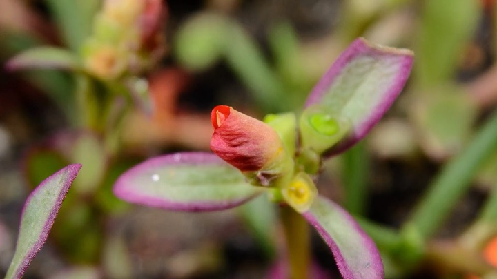

MODULE 01 · FALL 2026
HTML Review.
Build the structure your CSS will style. Review how to mark up content, connect pages and files, and make links, media, tables, and forms usable.
A page with structure
<header> Campus Garden </header>
<nav>
<a href="./events.html">Events</a>
</nav>
<main>
<h1> Seed Swap </h1>
<p> Bring seeds to share. </p>
</main>
<footer> Contact </footer>Jump to a topic
Document structure
Start with a complete document and give the browser enough information to display it properly.
<!doctype html>
<html lang="en">
<head>
<meta charset="utf-8">
<meta name="viewport" content="width=device-width, initial-scale=1">
<title>Seed Swap | Campus Garden</title>
<link rel="stylesheet" href="./styles.css">
</head>
<body>
<main>
<h1>Seed Swap</h1>
<p class="intro">Bring seeds to share.</p>
</main>
</body>
</html>- Doctype & language
- The doctype tells the browser to use standards mode.
lang="en"identifies the page language for tools such as screen readers. - Head & body
- The head holds metadata, the tab title, and stylesheet links. The body holds the page content. The viewport setting lets the mobile browser use the device width for layout.
- Tags & attributes
- Most elements have opening and closing tags. Void elements such as
img,input, andlinkhave no closing tag. Attributes in the opening tag provide details such ashreforclass. - Nesting
- Close the innermost element first. For example, use
<p>Bring <strong>seeds</strong>.</p>. To show a literal<or&in HTML source, write<or&. - Classes & IDs
- Reuse
class="intro"wherever you want shared styling with.intro. Use anidonce per document to name a specific target, such as a heading or form field.
Where do the browser tab title and visible page title go?
Put title in the head for the browser tab and h1 in the body for the visible page title. Use both so the page is easy to identify in either place.
Comments
Use comments for short explanations or reminders that help someone read the source. HTML comments do not appear as page text. Anyone who opens the source can still read them, so keep private information out of comments. Finish one comment before starting another.
<!-- Keep the schedule in date order. -->
<h2>Upcoming events</h2>You can read a reminder in your editor, but it is absent from the browser. Why?
Text between <!-- and --> is a comment. Move information students need into an element such as a paragraph or list.
Headings
Use a descriptive h1 for the page’s main topic, h2 for its sections, and h3 for subsections. Choose levels based on the outline. Use CSS when a heading needs a different size.
Sample page outline
h1Campus Gardenh2Upcoming eventsh3Seed swap
h2Visiting the garden
h1 through h6 are available. Start at the appropriate level and move one level deeper when adding a subsection. It is normal to go back up a level after a subsection ends.
What level should a subsection directly under an h2 use?
Use h3. When that subsection ends, the next section at the original level can use h2 again.
Hyperlinks & paths
Use an anchor with href to take readers somewhere. Make the text describe the destination.
- Same page
- Jump to the sample schedule uses
href="#tables"and matches the destination’sid="tables". - Another local page
- Open the library lab uses
href="./libraries.html". The file sits beside this HTML page. Use../to move up one directory. - Another website
- Read the MDN HTML reference uses a full HTTPS URL.
<a href="./libraries.html">Open the library lab</a>
<a href="#tables">Jump to the sample schedule</a>
<a href="https://developer.mozilla.org/en-US/docs/Web/HTML">MDN HTML reference</a>Use a button for an action on the current page, such as submitting a form. Use a for navigation. Test links and assets from the published site and match capitalization exactly. On a GitHub Pages project site, a leading slash starts at the domain root and can skip the repository folder.
A link works on your computer, but GitHub Pages returns 404. What do you check?
Check the filename, letter case, relative path, and whether the target exists in the published repository. Use DevTools Network to see the exact failed request.
Lists
Use a list when items belong together. The element you choose tells a reader how the items relate.
Unordered · ul
- Seeds
- Paper envelopes
- Labels
Ordered · ol
- Label the envelope.
- Add the seeds.
- Seal the envelope.
Description · dl
- Annual
- A plant that completes its life cycle in one growing season.
<ul>
<li>Seeds</li>
<li>Paper envelopes</li>
</ul>
<dl>
<dt>Annual</dt>
<dd>A plant that completes its life cycle in one growing season.</dd>
</dl>Use li for items in ul or ol. If an item needs a sublist, put the new list inside its parent li. Use dt and dd for terms and descriptions.
How would you mark up directions where the order matters?
Use ol with one li per step. A browser can present the items in order, and a screen reader can identify them as a list.
Images, audio & video
Use native media elements and give readers a text equivalent for information the media conveys.

Video with captions and native controls
Read the visual description
A close-up centers on a red flower bud among green leaves with purple edges. The background is out of focus.
Audio with a transcript
Transcript: A red flower bud sits among green leaves with purple edges.
- Images
- Use
imgwithsrcand meaningfulaltfor informative images. Give a purely decorative imagealt="". Include width and height to reserve space. Usemax-width: 100%; height: auto;in CSS so the image can shrink. - Audio & video
- Offer
controls. Usesourcefor the file URL and media type, and offer a fallback link. Provide a transcript for audio and synchronized captions for video with speech or meaningful sound. Describe meaningful visuals separately when needed. - Captions
- Add a WebVTT file with
<track kind="captions" src="./captions.vtt" srclang="en" label="English">inside a video element. Use the video player’s captions menu to check the English caption against the narration.
Inspect the image and media markup
<img src="./html-media/flower-poster.jpg"
width="720" height="405" alt="A red flower bud among green leaves with purple edges.">
<video controls preload="none" poster="./html-media/flower-poster.jpg">
<source src="./html-media/flower.mp4" type="video/mp4">
<track kind="captions" src="./html-media/flower-captions.vtt"
srclang="en" label="English" default>
<a href="./html-media/flower.mp4">Download the flower video</a>.
</video>
<audio controls>
<source src="./html-media/flower-description.m4a" type="audio/mp4">
</audio>The flower clip and still frame come from the MDN CC0 video examples. This lesson adds narration and captions.
What should the alternative text say if the only content of a link is a map icon?
Describe the destination or action, for example alt="Open the garden map". If the same link already contains visible text that names the destination, the icon can use alt="".
Semantics
Choose elements for what the content means. Then use CSS to decide how they look.
- Page landmarks
headerintroduces the page or section.navgroups major navigation.mainholds the page’s primary content.footerholds closing or supporting details.- Content groups
articleholds self-contained material such as an event announcement.sectiongroups related content with a heading.asideholds related secondary content.- Text & wrappers
pis a paragraph.strongmarks importance andemmarks emphasis.divandspanare generic wrappers when you need a styling hook and no more specific element fits.
<header>
<nav aria-label="Main">
<a href="./index.html">Home</a>
</nav>
</header>
<main>
<h1>Campus Garden</h1>
<article>
<h2>Seed swap</h2>
<p>Bring <strong>labeled seeds</strong> to share.</p>
</article>
</main>
<footer>Campus Garden Club</footer>Why use a real button for an action instead of a styled div?
A native button already participates in keyboard navigation, supports keyboard activation, and exposes its role to assistive technology. Apply your visual styles to the button.
Tables
Use a table for data with meaningful rows and columns. A caption names the table. Row and column headers help readers connect each cell with its context.
| Event | Day | Time |
|---|---|---|
| Seed swap | Tuesday | 10 a.m. |
| Planting | Thursday | 2 p.m. |
<table>
<caption>Sample garden event schedule</caption>
<thead>
<tr><th scope="col">Event</th><th scope="col">Day</th></tr>
</thead>
<tbody>
<tr><th scope="row">Seed swap</th><td>Tuesday</td></tr>
</tbody>
</table>tr groups cells into a row. Use th for header cells and td for data. Use CSS Grid or Flexbox when arranging page content visually.
Which element gives the table its title? Which attribute identifies a row header?
caption names the table. Use scope="row" on the th that labels that row.
Forms
Connect every control to a visible label, group related choices, and choose types that match the information requested.
Try a garden sign-up form
Use sample information, such as gardener@example.com. The form checks your input and previews it in this page.
label,id&name- Match a label’s
forto the control’s uniqueid. A control’snameidentifies its value in form data. A placeholder disappears when you type and cannot replace a label. - Common controls
- Use
selectfor choices andtextareafor multiline text. Radio buttons that share anameallow one choice. Checkboxes are independent. Usefieldsetandlegendto name related controls. - Validation & submission
requiredchecks for a value.type="email"checks email syntax. For a form that sends data,actionsets the destination andmethodsets how it is sent.getadds values to the URL andpostsends them in the request body. A real service also validates on the server.
Inspect labels, input types, and a grouped choice
<form>
<label for="email">Sample email (required)</label>
<input id="email" name="email" type="email" required>
<fieldset>
<legend>Preferred role</legend>
<label><input type="radio" name="role" value="participant" checked> Participant</label>
<label><input type="radio" name="role" value="volunteer"> Volunteer</label>
</fieldset>
<button type="submit">Preview sign-up</button>
</form>The live example uses a short script to show a preview inside the page. GitHub Pages serves the HTML, CSS, and JavaScript for the demo.
Why does clicking an email label sometimes fail to focus its field?
Check that the label’s for value matches the field’s id exactly and that the ID appears only once. The name value serves a different purpose.
Practice an HTML-first build
Create a small campus event page in index.html. Give it a title, semantic landmarks, and an outline of headings. Add a schedule table, a preparation list, an image with alternative text, and a form with a labeled field. Link a stylesheet after the structure is in place.
- Open the page and follow every link. Confirm that the image and stylesheet resolve both locally and on GitHub Pages.
- Tab through the controls and check the focus order. Try submitting with an empty required field and an invalid email.
- Use the browser’s Elements panel to check nesting and see how the browser interpreted your source. Fix issues reported by the HTML validator, then test again.
Debug a short event page
<h1>Campus Garden</h1>
<h3>Next event</h3>
<a href="#schedule">See the schedule</a>
<h2 id="timetable">Schedule</h2>
<label for="mail">Email</label>
<input id="email" type="email">Make “Next event” an h2 if it is a top-level section. Make the link fragment and heading ID match. Connect the label to id="email" and add a name if the value should go with form data.
Use Canvas Modules for official course instructions. AI-assisted and AI-generated student content are prohibited in this course.
HTML references
- MDN HTMLElements, attributes, and examples
- HTML validatorCheck your markup
- W3C forms tutorialLabels, groups, instructions, and feedback
- W3C tables tutorialCaptions and cell headers
- W3C accessible mediaCaptions, transcripts, and descriptions
- Return to CSS foundationsStylesheets, selectors, and the cascade